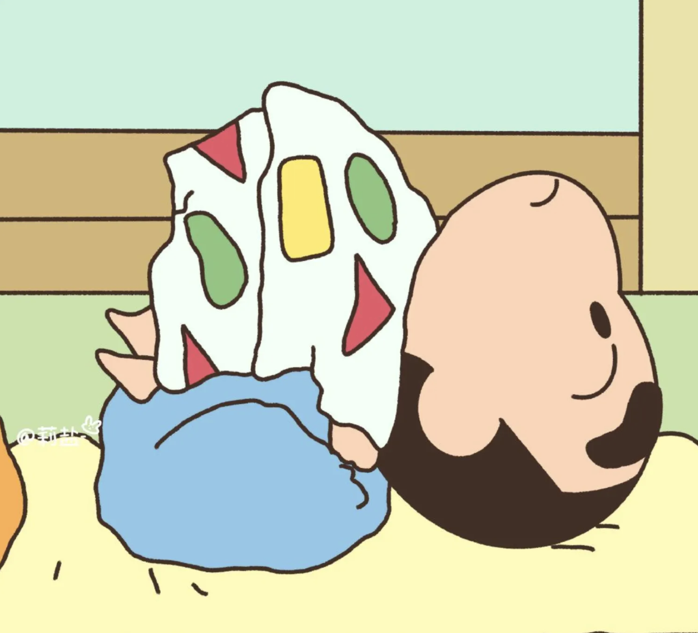

Sweet Little Things
25 June, 2025
I like to eat raisins.
That dry, chewy texture. a bit sweet. a bit tangy - i could munch on them for a whole day.
Though I love grapes more.
smooth, cold, fresh, nice and juicy.
Not to say I can't eat both of them.
different versions of the same thing.
both came from the same vine.
just one stayed in the sun a bit too long.
Happens to people too.
On some days you're a grape — soft, new, juicy, glowing, tangy, sweet.
On some days you're a dried up raisin — tougher, but still sweet.
Some people like just one version, some like both and some don't care either way — as long as you're not bitter.
Anyway, you're just a grape.
I don't eat ice-cream much.
Some of them are too sweet, like dipped, no - drowned in sugary syrup. Though I like watching when the stuff starts to melt. It's slow, messy and peaceful.
Sometimes I take a little in the spoon and let it slide back down into the cup. Over and over. No reason. Just feels nice.
Though I'd still pick up a bar of chocolate over it. Dark. So that the slight bitterness just sticks around for sometime.
People say life is sweet.
Stupid. It's 80% cocoa.
Bitter, but shiny enough to be sold in fancy wrappers.✨
And somehow, we all buy into it.
Maybe it's just one of those things no one really enjoys but no one questions either.
like group projects or small talk that goes nowhere or ignoring the alarm clock or typing 'lol' with a straight face or making to-do lists you don't ever follow or opening your phone right after locking it or checking your socials every single hour……
the list is long...

And honestly,
if you're still reading this, congrats.🎊🥂
we're not going anywhere. not with this post. not with life.
just random thoughts floating around.
but it doesn't matter - not everything needs a direction, right?
sometimes you just write about grapes, raisins, ice cream and chocolates.
or read about them.
Anyway, here we go again -
I like raisins.
Though I love grapes more.
So which one are you? 🔮


© magicBubblez by Ritvika Mishra. All rights reserved.